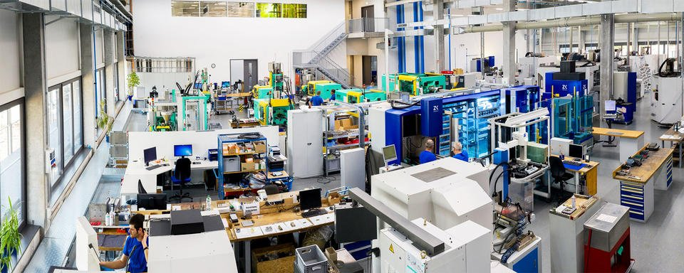
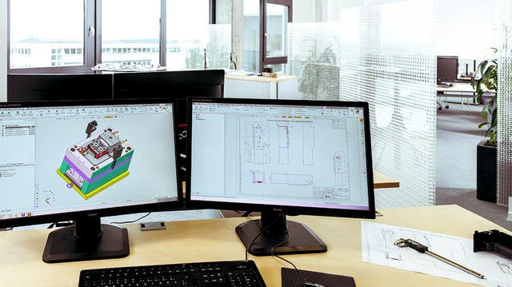
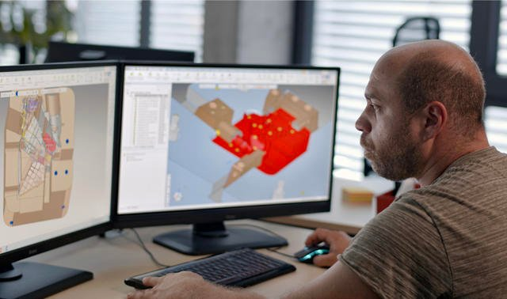
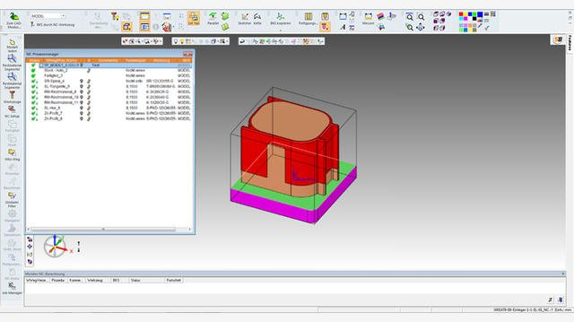
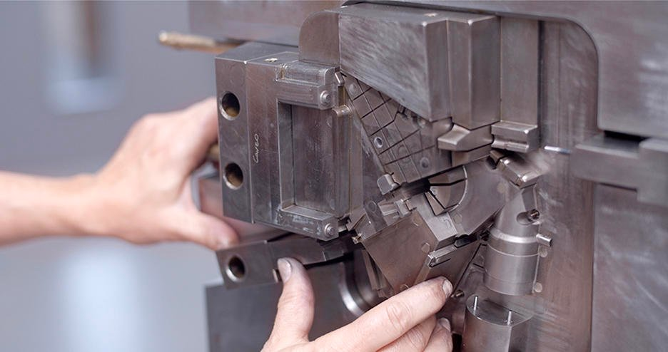

DÉFI
Concevoir et fabriquer des prototypes et des petites séries de manière efficace et rentable, tout en réduisant les erreurs.
SOLUTION
Logiciel intégré de CFAO Cimatron pour la conception et la fabrication de moules
RÉSULTATS
Réduction de 70 % du temps de conception et de fabrication des électrodes et automatisation du processus par la définition de modèles. Utilisation des machines de fraisage et d'électroérosion à pleine capacité pour concevoir et produire 10 000 électrodes par an, élimination des erreurs d'importation de données. Accélération de l'intégration des nouveaux employés (8 jours de formation) et maximisation du retour sur investissement.
VMR GmbH & Co. KG, located in Mönchweiler in southern Germany, has a wide range of machines, from CNC milling and EDM machines; to mill/turn, vacuum, and die-casting machines; to metal and plastic 3D printers. “We focus on prototypes and short runs of up to 10,000 parts,” explains CEO Thomas Viebrans. “We offer our customers a broad range of manufacturing technologies from one provider.” Each day brings different customers and different challenges that require an extremely flexible and efficient CAD/CAM system. With Cimatron, VMR designs and manufactures up to 50 graphite electrodes per day (10,000 per year).
Mise en œuvre d'un flux de travail continu de l'idée au produit final
VMR compte des clients dans de nombreux secteurs, notamment l'automobile, l'aérospatiale et le secteur médical. L'entreprise prend en charge l'ensemble du processus, de la conception et de la programmation CN à la production et à l'assemblage. VMR propose également à ses clients une conception et une optimisation personnalisées des moules.
Depuis 2000, leur outil de prédilection est le logiciel intégré de CAO/FAO Cimatron. Auparavant, VMR utilisait les logiciels STRIM 100 et Euclid Styler pour la CAO et SolidCAM pour la FAO,
ce qui provoquait souvent des erreurs de traduction des données. Viebrans se souvient : "Nous avons dû refuser des commandes parce que nous ne pouvions pas ouvrir les modèles des clients. En outre, le système n'était pas adapté à la fabrication d'outils et la licence FAO était très chère."

En raison de ces problèmes, ils ont commencé à évaluer une nouvelle solution CAO/FAO en 1999. VMR a testé plusieurs systèmes et Cimatron s'est rapidement imposé comme un favori, en grande partie parce qu'il s'agit d'un système intégré. Viebrans déclare : "Nous avons aimé l'ouverture et l'exhaustivité du système. Le système précédent offrait une très bonne modélisation de formes libres, mais Cimatron était encore meilleur. L'un des points forts de Cimatron réside dans les interfaces de données CAO, qui sont abordables et de première qualité.
VMR a désormais moins de problèmes d'interface, sans erreurs de données dues à l'importation et à l'exportation, ce qui garantit un meilleur rendement et une planification à l'épreuve des processus.
Cimatron prouve sa valeur tous les jours. Par exemple, VMR possède plus de 20 licences de visualisation, qui sont utilisées dans l'atelier par les machinistes qui peuvent alors visualiser les modèles 3D et comprendre comment assembler les outils. Cela facilite non seulement le travail des machinistes, mais aussi celui des concepteurs, qui doivent répondre à moins de questions. Les ventes et d'autres départements utilisent également les licences de visualisation.


Depuis que nous utilisons Cimatron, nous n'avons plus jamais rencontré de problèmes d'importation de données. En outre, les coûts de suivi et de maintenance sont abordables.
Automatisation de la conception des électrodes pour un rendement élevé
VMR a réduit de 70 % le temps nécessaire à la conception et à la fabrication des électrodes et a automatisé le processus en définissant des modèles dans Cimatron pour les géométries d'électrodes les plus utilisées. Ces modèles sont prédéfinis avec tous les paramètres de conception et de production, tels que les programmes NC pour le fraisage. Une nouvelle électrode est générée en choisissant le modèle le plus approprié et en modifiant la géométrie. Une fois que Cimatron a actualisé le modèle, VMR peut immédiatement lancer la production.

L'année dernière, nos ingénieurs spécialisés dans les électrodes ont créé des géométries et des programmes CN pour 10 000 électrodes, soit environ 50 électrodes par jour. Cela n'est possible qu'avec une automatisation fiable et extraordinaire. C'est exactement ce qu'offre Cimatron. Avec Cimatron, nous pouvons faire fonctionner nos machines de fraisage et d'électroérosion à pleine capacité.
Viebrans ajoute : "Le fait que nos ingénieurs aient travaillé en tant que programmeurs CN les aide à connaître les pièges. Les modèles 3D sont construits de manière à faciliter la FAO - à une cadence de 50 par jour, c'est un facteur essentiel".
Maximiser le retour sur investissement
Cimatron a permis à VMR de maximiser son retour sur investissement (ROI) en augmentant l'efficacité et la productivité grâce à l'automatisation, en accélérant le temps d'intégration des nouveaux employés et en réalisant plus de commandes.
La facilité d'utilisation de Cimatron est un avantage significatif : "Il est facile pour les nouveaux employés de devenir efficaces avec Cimatron", dit Viebrans. Angelika Hermann, représentante des ventes de logiciels Cimatron, explique : "Huit jours de formation suffisent pour initier un ingénieur à Cimatron : "Huit jours de formation suffisent pour initier un ingénieur à Cimatron. VMR est mon client de référence en ce qui concerne l'efficacité de Cimatron".
"Au fil des ans, Cimatron a été un partenaire très précieux", se souvient Viebrans. "La formation est excellente et permet à nos employés de travailler chez Cimatron presque immédiatement. La collaboration avec notre représentant commercial a été étroite, agréable et détendue dès le départ, ce qui est important car cela facilite les affaires et crée de la confiance."
"Dans notre secteur, la rapidité est cruciale", conclut M. Viebrans. "Nos clients ont besoin de prototypes cohérents et de haute qualité le plus rapidement possible. Pour répondre à ces attentes, je dois avoir confiance en nos outils ; c'est ce que m'offre Cimatron. Je recommanderais Cimatron à tout le monde.
